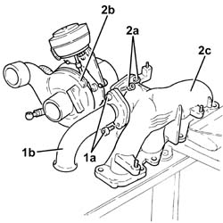
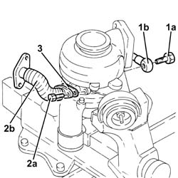

1064A26 VARIABLE GEOMETRY TURBOCHARGER EXHAUST MANIFOLD SLEEVE LEADING TO EXHAUST PIPE DISMANTLE AT BENCH
- Path
- Procedures > 10 ENGINE UNIT > 1064 TURBO CHARGING SYSTEM > 1064A TURBO CHARGER ASSEMBLY > 1064A26 VARIABLE GEOMETRY TURBOCHARGER EXHAUST MANIFOLD SLEEVE LEADING TO EXHAUST PIPE DISMANTLE AT BENCH
- Kind
- repair procedure (removal / refitting; the operation number is the code)
- Applies to
- engines: 1.9 JTD 16V; all production periods
- Interactive page
- https://sloeber94.github.io/elrnDB-aGt/en/#/125001066
Applies to: engines: 1.9 JTD 16V; all production periods
Place the assembly in a vice fitted with protective jaws.
1. Undo the bolts (1a) and remove the exhaust gas inlet pipe to the water/exhaust gas heat exchanger for the E.G.R. system, exhaust manifold side.
2. Undo the nuts (2a) and separate the variable geometry turbocharger assembly (2b) from the exhaust manifold (2b).

Applies to: engines: 1.9 JTD 16V; all production periods
1. Undo the connector (1a) and remove the engine oil supply pipe to the turbocharger (1b).
2. Undo the bolts (2a) and remove the engine oil return pipe from the turbocharger (2b).
3. Remove the gasket.

Applies to: engines: 1.9 JTD 16V; all production periods
Refit the engine oil return pipe complete with gaskets in its seating, and secure it using the bolts.
Connect the engine oil supply pipe to the turbocharger and secure by tightening the connector to the recommended torque.
 | Fastening | Component | Ø | Value (daNm) |
|---|---|---|---|---|
- | Connector | OIL DELIVERY PIPE TO TURBO | M12 | (Engine crankcase side) 1.4 ÷ 1.7 |
Assemble the variable geometry turbocharger to the exhaust manifold and tighten the nuts to the recommended torque.
| Fastening | Component | Ø | Value (daNm) |
|---|---|---|---|---|
- | Nut | VARIABLE GEOMETRY TURBOCHARGER | M8 | (Exhaust manifold side) 2.3 ÷ 2.8 |
Place the E.G.R. system water/exhaust gas heat exchanger exhaust gas inlet pipe back in its housing and fasten it tighten the bolts to the recommended torque.
| Fastening | Component | Ø | Value (daNm) |
|---|---|---|---|---|
- | Bolt | WATER/GAS HEAT EXCHANGER FOR EGR SYSTEM | M8 | (Exhaust manifold side 23 28 |
Remove the assembly from the vice fitted with protective jaws.